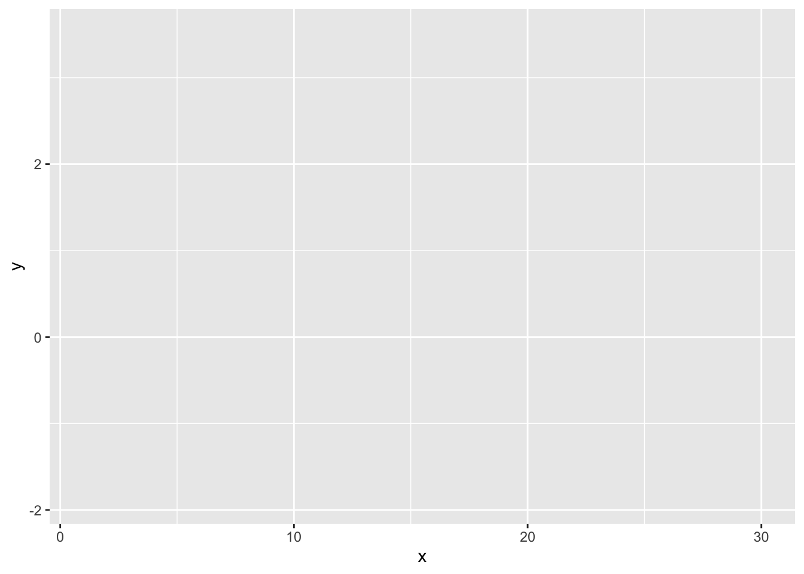
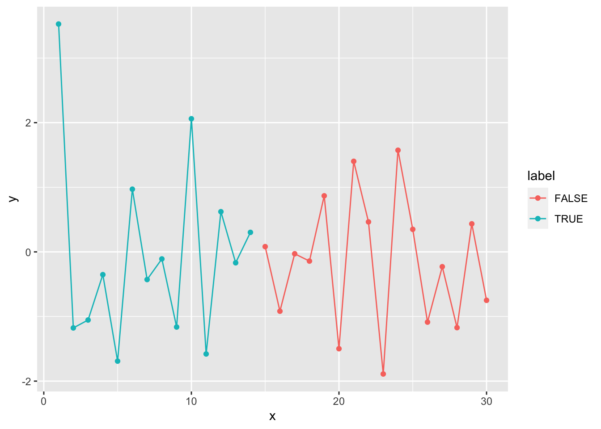

3 Plotting with ggplot2
You will probably present exciting results with the help of figures and plots. The ggplot2 package allows us to design beautiful graphs with relatively low effort in R. ggplot2 is designed to build up graphs in 4 steps:

Figure 3.1: Source DataCamp
1. Data
The first step is to provide a data set from which the data will be taken.
library(tidyverse) ## ── Attaching packages ─────────────────────────────────────── tidyverse 1.3.2 ──
## ✔ ggplot2 3.3.6 ✔ purrr 0.3.4
## ✔ tibble 3.1.8 ✔ dplyr 1.0.9
## ✔ tidyr 1.2.0 ✔ stringr 1.4.0
## ✔ readr 2.1.2 ✔ forcats 0.5.1
## ── Conflicts ────────────────────────────────────────── tidyverse_conflicts() ──
## ✖ dplyr::filter() masks stats::filter()
## ✖ dplyr::lag() masks stats::lag()# 1. Let's generate some data
x <- 1:30
y <- rnorm(30) # random numbers from a normal distribution
label <- x < 15 # True / False boolean vector
data <- tibble(x,y, label) # data frame (tibble) object2. Aesthetics
The second step is to specify which data set elements will be mapped to an excellent plot.
# 2. Specify Elements
graph <- ggplot(data, # Specify the data set
aes(x,y, color = label)) # Specify the elements to map
graph # We expect a blank canvas
3. Geometrics
Now that we have specified where the data is coming from and which elements we will use, we need to tell ggplot how we want to visualize the data, i.e., the plotting (geom in ggplot2).
# 3. Specifiy how to plot the data
graph <- ggplot(data, # Specify the data set
aes(x,y, color = label)) + # Specify the elements to map
geom_point() + # Scatter Plot
geom_line() # Line Plot
graph # We now see the points!
4. Themes
Finally, we can tell ggplot how we want the look and feel of our graph. Do we want a bold font or large font? You can change every aspect of the graph with the theme() function.
# 4. Personalize your graph!
graph <- ggplot(data, # Specify the data set
aes(x,y, color = label)) + # Specify the elements to map
geom_point() + # Scatter Plot
geom_line() + # Line Plot
theme(plot.title = element_text(face = "bold", colour = "Black", size = 12)) # Add theme
# Print graph
graph ggplot2 has the novelty of identifying the graphs as objects, which means that we can store graphs in variables and lists. Further, we can add more elements to a stored value with the +operator.
# In the last example we forgot to add labels
graph + labs(y = "y",
x = "x",
title = "Figure 1: Plotting with style",
subtitle = "Jaakko's Online Resources",
colour = NULL,
caption = " Source: god")